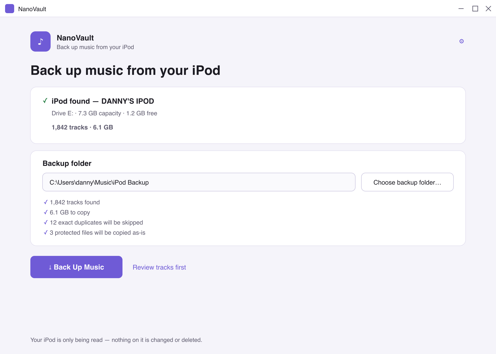

Finds your iPod automatically
Plug in and NanoVault detects it — no drive letters, no hidden folders, no renaming random files by hand.
NanoVault copies every song from your iPod nano into a tidy folder on your PC — with real track names, artwork and playlists. No iTunes, no tech skills, and it opens your iPod read-only so nothing on it ever changes.

So were we. Plenty of iPod-transfer apps let you copy a handful of tracks, then hold the rest of your own music hostage behind a £19.99 licence. NanoVault copies all of it, the first time, for nothing. If it saves your library and you fancy buying us a coffee, that’s the whole business model.
One click turns a drawer-bound iPod into an organised, future-proof music folder.
Plug in and NanoVault detects it — no drive letters, no hidden folders, no renaming random files by hand.
Recovers titles, artists, albums and track numbers from the songs and the iPod’s own database — so F04/XKCD.mp3 becomes The Beatles / Revolver / 06 – Yellow Submarine.
Choose Artist / Album / Track and more. Windows-illegal characters, reserved names and mega-long paths are all handled for you.
Each file is checked with a SHA-256 hash after copying, so you know the backup is bit-for-bit identical to the original.
Get an .m3u8 of everything, your iPod’s own playlists rebuilt, and a tidy HTML report of exactly what was copied.
Skips exact duplicates, keeps both when names clash, copies protected songs as-is, and never once overwrites a file silently.
Connect it with its USB cable. NanoVault spots it on its own.
Choose anywhere on your PC to save the music.
Watch progress, pause or cancel any time. Your iPod is only read.
Organised files, playlists and a report — ready for anything.
If Windows shows your iPod as a drive, NanoVault can read it. That covers the classic disk-mode iPods.
NanoVault is built so it cannot write to your iPod — that’s enforced in the code, not just a promise. The worst it can ever do is read.
NanoVault is free and always will be. There’s no upsell, no “pro” version, no locked features. If it rescued a library you thought was gone, a small tip keeps it maintained — entirely optional, no pressure.
Free, safe, and it’ll never ask you to pay to unlock the rest of your own songs.
⤓ Download NanoVault for Windows